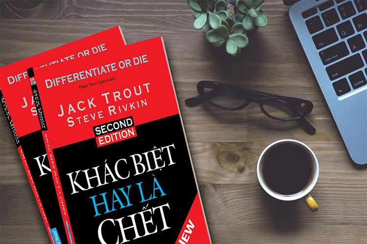
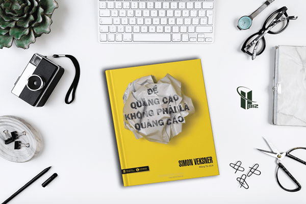
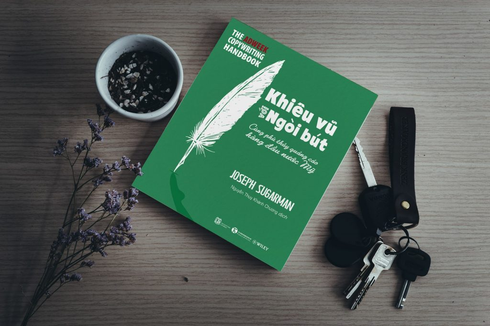

NHỮNG CUỐN SÁCH HAY MÌNH ĐÃ ĐỌC 1. Khác biệt hay là chết Đây là một cuốn sách được đánh giá là một trong những cuốn sách Marketing hay nhất mọi thời đại. Nó là “người khai sinh” ra định nghĩa “Khác biệt hóa” (Differentiate), từ đó từ nãy đã trở thành từ ngữ lớn trong thế giới kinh doanh ngày nay.  Cuốn sách đưa ra 18 ví dụ thực tế về những điều trong thị trường. Một chương nói về những nghiên cứu về dòng sản phẩm mới. Một chương đề cập sự khác biệt qua những tin đồn truyền miệng. Còn chương còn lại nhấn mạnh bạn có thể khác biệt hóa mọi thứ trong mọi lĩnh vực kinh doanh của bạn. Đây là một cuốn sách hay, chắc chắn bạn sẽ tìm thấy rất nhiều điều thú vị t rong ấn bản mới này. 2. Để quảng cáo không phải là quảng cáo Cuốn sách này của Simon Veksner đang hướng tới bất kỳ ai đang cân nhắc trở thành một marketer chuyên nghiệp. Sự khác biệt rõ nhất của cuốn sách này với các cuốn sách dạy quảng cáo khác là cuốn sẽ không dạy cho bạn cách để có được các ý tưởng hay cách viết các chương trình quảng cáo.  Thay vào đó cuốn sách này sẽ chỉ cho bạn cách để tận dụng những ưu thế tốt nhất từ những người bạn làm việc cùng, chẳng hạn như các nhà lập kế hoạch, nhiếp ảnh gia, hay đạo diễn. Nó cũng sẽ dạy bạn cách để thành công trong việc khiến cho giám đốc sáng tạo chấp nhận ý tưởng của bạn và cách để trình bày các ý tưởng của mình với khách hàng. Cũng có những vấn đề “nhẹ nhàng” hơn được thảo luận trong cuốn sách, chẳng hạn như liệu trang phục của bạn có thực sự quan trọng không, và làm thế nào để tranh luận với cộng sự. 3. Khiêu vũ với ngòi bút Nội dung quảng cáo là trái tim và linh hồn của người quảng cáo, cho dù là quảng cáo in ấn, trên truyền hình, radio hay bất kỳ phương tiện truyền thông nào khác. Trong Khiêu vũ với ngòi bút, copywriter huyền thoại, phù thủy quảng cáo của nước Mỹ, Joseph Sugarman, cung cấp cho độc giả những hướng dẫn cơ bản và những lời khuyên lão luyện để viết nên một quảng cáo hấp dẫn, khiến khách hàng đánh đổi những đồng tiền khó nhọc mới kiếm được của mình để mua sản phẩm của bạn.  Cuốn sách này hàm chứa mọi công cụ, chiến thuật cần và đủ để bạn viết được những quảng cáo bán hàng hiệu quả như những quảng cáo vĩ đãi đưa Sugarman lên đỉnh cao danh tiếng và tiền tài.